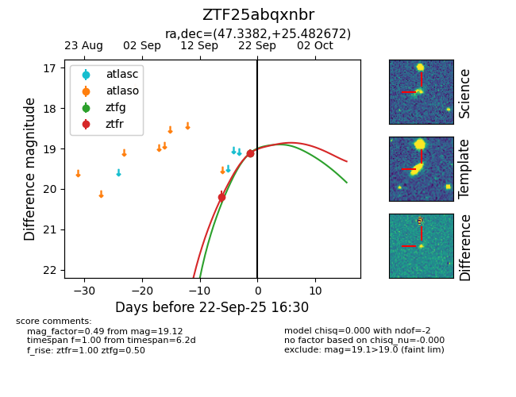
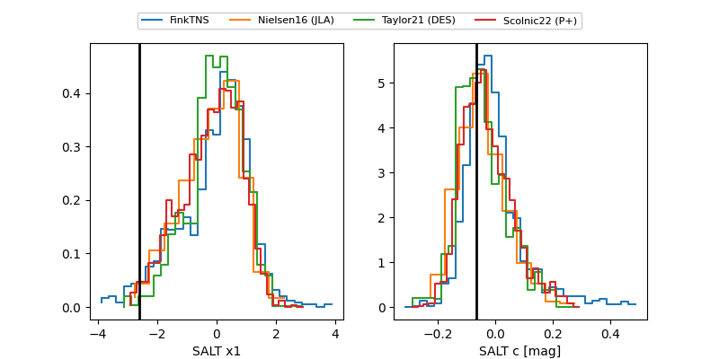

FINK: ZTF25abqxnbr
Lasair: ZTF25abqxnbr
ALeRCE: ZTF25abqxnbr
ZTF25abqxnbr (ztf,fink)
equatorial (ra, dec) = (47.3382,+25.48267)
galactic (l, b) = (158.2142,-27.78114)


last ztfg=19.12, ztfr=19.12
1 ztfg, 2 ztfr detections